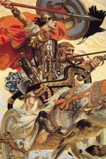

Кухулін ( "пес Куланна"), в ірландській міфології непереможний воїн, герой, центральний персонаж багатьох саг, чия запальність часто завдавала горе йому самому і оточуючим. Матір'ю Кухулина була Дехтире, внучка бога любові Аонгуса. На весільному бенкеті в її кубок залетіла муха, і Дехтире ненавмисно проковтнула її. На дівчину напав глибокий сон; їй приснився бог сонця Луг, який зажадав, щоб вона разом з п'ятдесятьма родичками обернулася птахами і слідувала за ним в потойбічний світ. Три роки по тому зграя птахів з яскравим оперенням повернулася в Емайн Маху, столицю Ольстера. Жителі почали стріляти по ним з пращ, але не змогли потрапити ні в одну. Було вирішено зловити птахів вночі, коли вони заснуть. Несподівано замість птахів воїни виявили п'ятдесят жінок, і серед них Дехтире, сплячих в чудовій хатині.
Дехтире принесла з собою дар потойбічного світу - сина на ім'я Сетанта. Суалтам Мак Рот, її чоловік, був такий щасливий знову знайти дружину, що усиновив хлопчика, майбутнього героя Кухулина, якому батько Дехтире, друїд Катбад, колись передбачив славу великого воїна. З дитинства Сетанта охоче навчався військового мистецтва, але мало хто помічав, наскільки хлопчина сильний і хоробрий. Запізнившись на вечірку, яку Ольстерський коваль куланів влаштував на честь короля Конхобара Мак Несса, юний герой у самих воріт був атакований лютим псом і зміг уникнути смерті, розтрощивши йому голову. Господар сумував, втративши вірного сторожа, і Сетанта зголосився служити замість собаки, поки не буде знайдена заміна. Куланів відхилив пропозицію, проте з тих пір Сетанта отримав нове ім'я - Кухулін, "пес Куланна". Незважаючи на попередження Катбад, що того, хто в певний день піде в перший бій, призначена коротке життя, Кухулін незабаром підняв зброю проти ворогів Ольстера, напівбогів Фойла, Фаннела і Туахелла, а також проти їх численних поплічників.
У цій битві Кухулін вперше увійшов в свій страхітливий бойовий раж. Повертаючись в Емайн Маху на колісниці, обвішаний закривавленими головами ворогів, Кухулін, все ще перебуваючи в стані бойової сказу, почав кружляти навколо фортеці і викликати на бій всіх підряд. На щастя, героя зупинила королева Ольстера, Мугайн.
Вона відправила йому назустріч сто п'ятдесят жінок, які несли три величезні діжки з водою. Кухулін дозволив їм посадити себе в воду. Перша діжка просто-напросто вибухнула, в другій вода закипіла, а в третій тільки сильно нагрілася. Так заспокоювали юного героя, вперше пізнав смак крові. Кухулину сподобалася Емер, дочка підступного владики Фогалла, який порадив йому повчитися бойової доблесті і мудрості у чудових наставниць Схилах, Уатах і Айфе з землі тіней. Схилах навчила героя його знаменитому бойового стрибка але, побоюючись за життя Кухулина, просила його не викликати на поєдинок її сестру Айфе. Однак Кухулину хитрістю вдалося перемогти діву-воїна і провести з нею ніч. Йдучи, герой залишив Айфе кільце. Через роки, коли їх син Конлайх виріс, то відправився в Ольстер помірятися силою з тамтешніми героями. Гарячий і спритний, він легко впорався з Коналл, молочним братом Кухулина, який, не послухавши раді своєї дружини, також прийняв виклик сміливого юнака. Доля, однак, розпорядилася, щоб син загинув від руки батька. Кухулін бився з могутнім юним незнайомцем.
Золоте кільце на пальці Конлайха, подароване Кухулином його матері, занадто пізно відкрило герою ім'я власного сина. Кухулін зажив слави непереможного воїна, коли захищав Ольстер від королеви Медб. Втративши підтримку богині смерті Морриган, після того як відкинув її любов, Кухулін отримав жахливу рану в живіт, яку навіть Луг, його батько, не міг залікувати. Він вмирав стоячи, прив'язавши себе до священного каменя. І зараз Морриган, богиня війни і смерті, в образі ворони сіла на його плече, а вороги відрубали Кухулину голову і праву руку, залишивши тіло стерв'ятникам. Втрату захисника оплакував весь Ольстер.